Al hablar de Springfield es imposible no pensar en los lugares más iconicos de la ciudad, desde los cotidianos, hasta los más infrecuentes pero mágicos. En esta sección te invitamos a conocer los lugares más extraordinarios de nuestra ciudad, donde la diversión y la aventura están garantizadas.
El Bar de Moe
El Bar de Moe es el lugar perfecto para relajarse y disfrutar de una bebida refrescante. Es conocido por su ambiente acogedor y su servicio amable.
Cosas que se pueden hacer en el Bar de Moe:
Tomarte un buen Fernandito.
Desahogarte de guapo con Moe.
Cagarte bien a trompadas con cualquier gil.
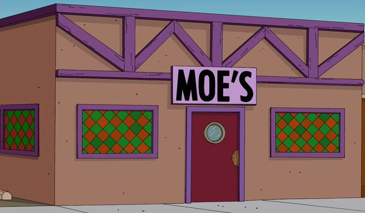
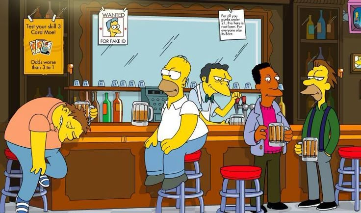
Kwik-E-Mart
El Kwik-E-Mart es la tienda de conveniencia más famosa de Springfield. Aquí puedes encontrar una gran variedad de productos, desde snacks hasta artículos de primera necesidad, el encargado Apu te recibirá con una gran sonrisa.
Cosas que se pueden hacer en el Kwik-E-Mart:
Comprar papelillos.
Comprar comida vencida.
Cagar a puteadas al vendedor Apu.
Hacerte compa del Apu y ganarte un heladito.
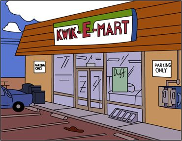
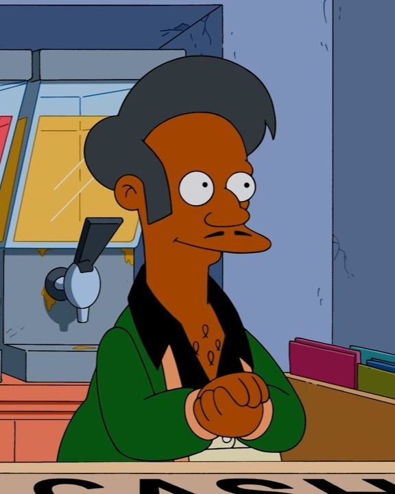
Planta Nuclear
La Planta Nuclear es el pulmon de la electricidad de Springfield. Aquí se genera la energía que alimenta a toda la ciudad, su humilde dueño, Mr.Burns, ha demostrado que su central no daña el medio ambiente en absoluto.
Cosas que se pueden hacer en la Planta Nuclear:
Presionar botones al azar.
Jugar con uranio.
Hacerlo por ella.
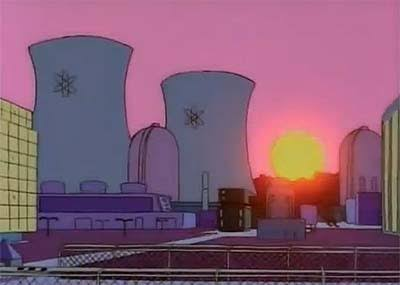
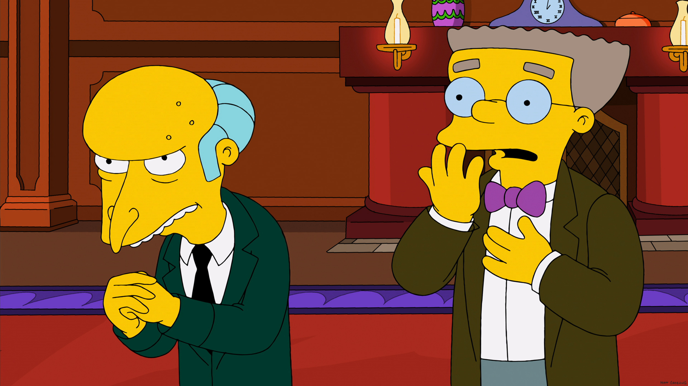
Escuela Primaria de Springfield
La Escuela Primaria de Springfield es el lugar donde los niños de la ciudad reciben su educación. Dirigida por el estricto director Skinner, la escuela ofrece un ambiente seguro y educativo para los estudiantes garantizado por los maestros y conserjes que ofrece la institución.
Cosas que se pueden hacer en la Escuela Primaria de Springfield:
Hacer trampa en las pruebas.
Hacerle bullying a Milhouse.
Hacerle una prank a Skinner.
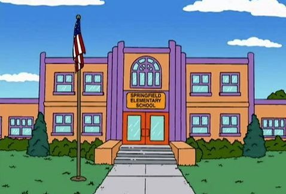
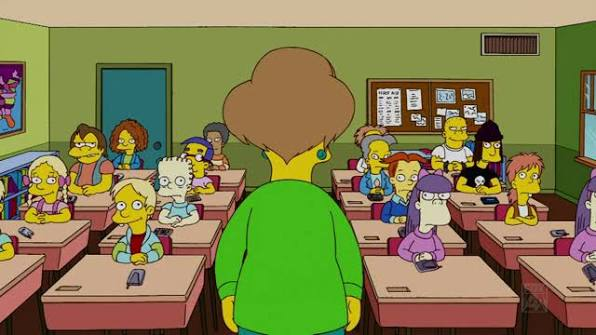
Krusty Burger
Krusty Burger es la cadena de comida rápida más popular de Springfield. Aquí puedes disfrutar de deliciosas hamburguesas y papas fritas, mientras te diviertes con el payaso Krusty y su equipo.
Cosas que se pueden hacer en Krusty Burger:
Comerte una Big Krusty.
Reirte con el payasito Krusty y su fiel amigo el simio Teeny.
Reconsiderar los años de vida perdidos por el colesterol.
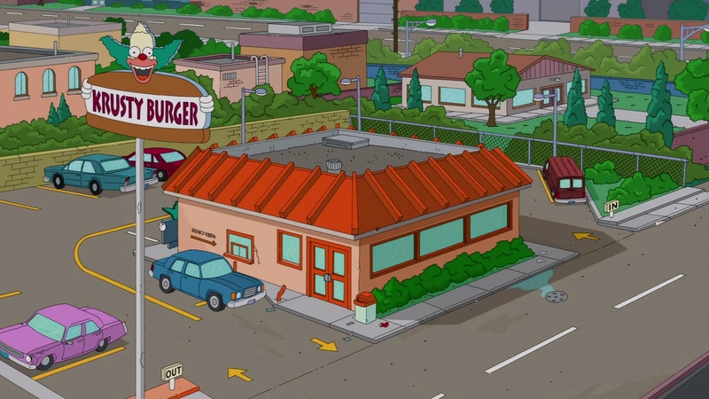
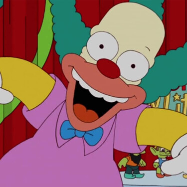
Iglesia de Springfield
La Iglesia de Springfield es un lugar de culto y comunidad para los habitantes de la ciudad. Aquí se celebran ceremonias religiosas y eventos comunitarios, liderados por el reverendo Lovejoy.
Cosas que se pueden hacer en la Iglesia de Springfield:
Rezarle al gauchito gil.
Pedir donaciones demás al Sr. Burns.
Confesar lo que hiciste el 12 de septiembre del 2007 a las 3:12 de la madrugada.
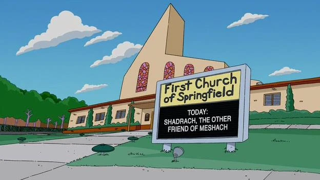
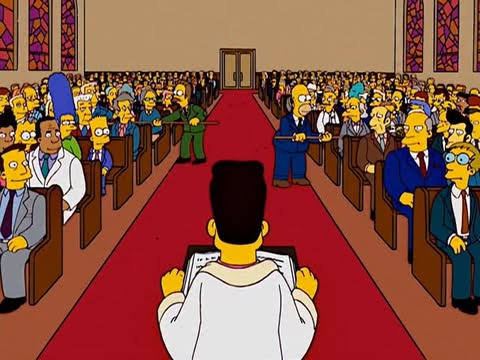